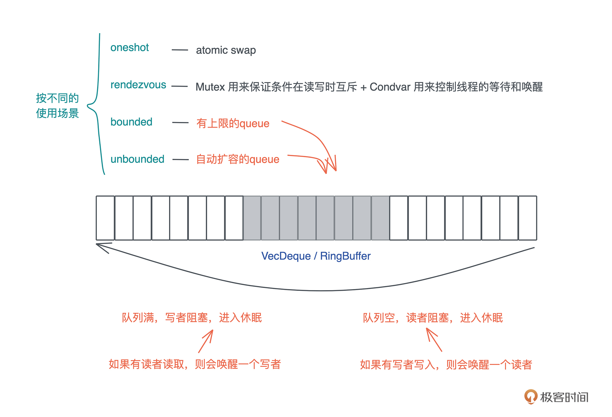
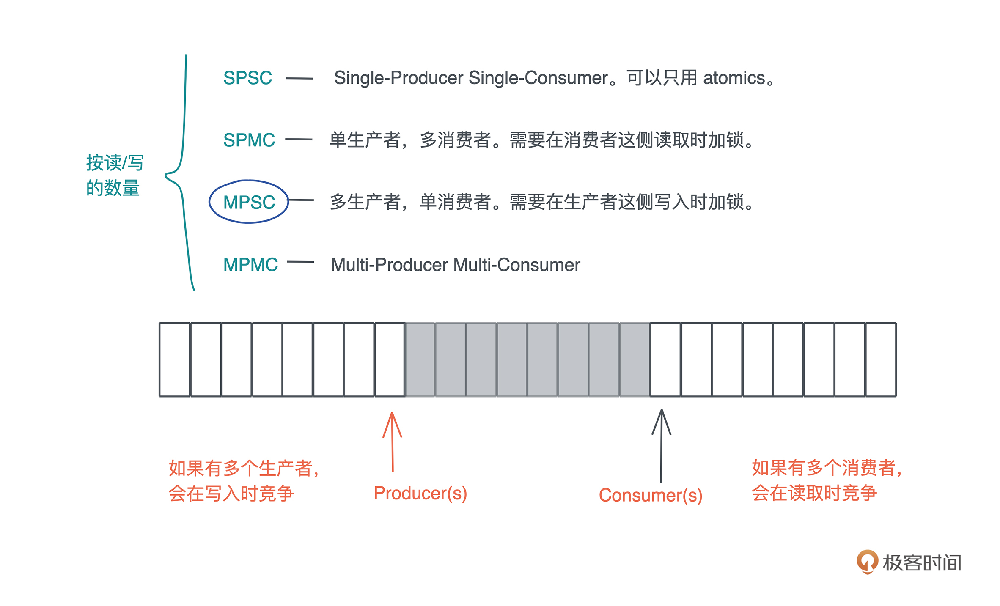

- 00 开篇词 让Rust成为你的下一门主力语言.md.html
- 01 内存：值放堆上还是放栈上，这是一个问题.md.html
- 02 串讲：编程开发中，那些你需要掌握的基本概念.md.html
- 03 初窥门径：从你的第一个Rust程序开始！.md.html
- 04 get hands dirty：来写个实用的CLI小工具.md.html
- 05 get hands dirty：做一个图片服务器有多难？.md.html
- 06 get hands dirty：SQL查询工具怎么一鱼多吃？.md.html
- 07 所有权：值的生杀大权到底在谁手上？.md.html
- 08 所有权：值的借用是如何工作的？.md.html
- 09 所有权：一个值可以有多个所有者么？.md.html
- 10 生命周期：你创建的值究竟能活多久？.md.html
- 11 内存管理：从创建到消亡，值都经历了什么？.md.html
- 12 类型系统：Rust的类型系统有什么特点？.md.html
- 13 类型系统：如何使用trait来定义接口？.md.html
- 14 类型系统：有哪些必须掌握的trait？.md.html
- 15 数据结构：这些浓眉大眼的结构竟然都是智能指针？.md.html
- 16 数据结构：Vec_T_、&[T]、Box_[T]_ ，你真的了解集合容器么？.md.html
- 17 数据结构：软件系统核心部件哈希表，内存如何布局？.md.html
- 18 错误处理：为什么Rust的错误处理与众不同？.md.html
- 19 闭包：FnOnce、FnMut和Fn，为什么有这么多类型？.md.html
- 20 4 Steps ：如何更好地阅读Rust源码？.md.html
- 21 阶段实操（1）：构建一个简单的KV server-基本流程.md.html
- 22 阶段实操（2）：构建一个简单的KV server-基本流程.md.html
- 23 类型系统：如何在实战中使用泛型编程？.md.html
- 24 类型系统：如何在实战中使用trait object？.md.html
- 25 类型系统：如何围绕trait来设计和架构系统？.md.html
- 26 阶段实操（3）：构建一个简单的KV server-高级trait技巧.md.html
- 27 生态系统：有哪些常有的Rust库可以为我所用？.md.html
- 28 网络开发（上）：如何使用Rust处理网络请求？.md.html
- 29 网络开发（下）：如何使用Rust处理网络请求？.md.html
- 30 Unsafe Rust：如何用C++的方式打开Rust？.md.html
- 31 FFI：Rust如何和你的语言架起沟通桥梁？.md.html
- 32 实操项目：使用PyO3开发Python3模块.md.html
- 33 并发处理（上）：从atomics到Channel，Rust都提供了什么工具？.md.html
- 34 并发处理（下）：从atomics到Channel，Rust都提供了什么工具？.md.html
- 35 实操项目：如何实现一个基本的MPSC channel？.md.html
- 36 阶段实操（4）：构建一个简单的KV server-网络处理.md.html
- 37 阶段实操（5）：构建一个简单的KV server-网络安全.md.html
- 38 异步处理：Future是什么？它和async_await是什么关系？.md.html
- 39 异步处理：async_await内部是怎么实现的？.md.html
- 40 异步处理：如何处理异步IO？.md.html
- 41 阶段实操（6）：构建一个简单的KV server-异步处理.md.html
- 42 阶段实操（7）：构建一个简单的KV server-如何做大的重构？.md.html
- 43 生产环境：真实世界下的一个Rust项目包含哪些要素？.md.html
- 44 数据处理：应用程序和数据如何打交道？.md.html
- 45 阶段实操（8）：构建一个简单的KV server-配置_测试_监控_CI_CD.md.html
- 46 软件架构：如何用Rust架构复杂系统？.md.html
- 加餐 Rust2021版次问世了！.md.html
- 加餐 代码即数据：为什么我们需要宏编程能力？.md.html
- 加餐 宏编程（上）：用最“笨”的方式撰写宏.md.html
- 加餐 宏编程（下）：用 syn_quote 优雅地构建宏.md.html
- 加餐 愚昧之巅：你的Rust学习常见问题汇总.md.html
- 加餐 期中测试：参考实现讲解.md.html
- 加餐 期中测试：来写一个简单的grep命令行.md.html
- 加餐 这个专栏你可以怎么学，以及Rust是否值得学？.md.html
- 大咖助场 开悟之坡（上）：Rust的现状、机遇与挑战.md.html
- 大咖助场 开悟之坡（下）：Rust的现状、机遇与挑战.md.html
- 特别策划 学习锦囊（一）：听听课代表们怎么说.md.html
- 特别策划 学习锦囊（三）：听听课代表们怎么说.md.html
- 特别策划 学习锦囊（二）：听听课代表们怎么说.md.html
- 用户故事 绝望之谷：改变从学习开始.md.html
- 用户故事 语言不仅是工具，还是思维方式.md.html
- 结束语 永续之原：Rust学习，如何持续精进？.md.html
- 捐赠
34 并发处理（下）：从atomics到Channel，Rust都提供了什么工具？
你好，我是陈天。
对于并发状态下这三种常见的工作模式：自由竞争模式、map/reduce 模式、DAG 模式，我们的难点是如何在这些并发的任务中进行同步。atomic/Mutex 解决了自由竞争模式下并发任务的同步问题，也能够很好地解决 map/reduce 模式下的同步问题，因为此时同步只发生在 map 和 reduce 两个阶段。-

然而，它们没有解决一个更高层次的问题，也就是 DAG 模式：如果这种访问需要按照一定顺序进行或者前后有依赖关系，该怎么做？
这个问题的典型场景是生产者-消费者模式：生产者生产出来内容后，需要有机制通知消费者可以消费。比如 socket 上有数据了，通知处理线程来处理数据，处理完成之后，再通知 socket 收发的线程发送数据。
Condvar
所以，操作系统还提供了 Condvar。Condvar 有两种状态：
- 等待（wait）：线程在队列中等待，直到满足某个条件。
- 通知（notify）：当 condvar 的条件满足时，当前线程通知其他等待的线程可以被唤醒。通知可以是单个通知，也可以是多个通知，甚至广播（通知所有人）。
在实践中，Condvar 往往和 Mutex 一起使用：Mutex 用于保证条件在读写时互斥，Condvar 用于控制线程的等待和唤醒。我们来看一个例子：
use std::sync::{Arc, Condvar, Mutex};
use std::thread;
use std::time::Duration;
fn main() {
let pair = Arc::new((Mutex::new(false), Condvar::new()));
let pair2 = Arc::clone(&pair);
thread::spawn(move || {
let (lock, cvar) = &*pair2;
let mut started = lock.lock().unwrap();
*started = true;
eprintln!("I'm a happy worker!");
// 通知主线程
cvar.notify_one();
loop {
thread::sleep(Duration::from_secs(1));
println!("working...");
}
});
// 等待工作线程的通知
let (lock, cvar) = &*pair;
let mut started = lock.lock().unwrap();
while !*started {
started = cvar.wait(started).unwrap();
}
eprintln!("Worker started!");
}
这段代码通过 condvar，我们实现了 worker 线程在执行到一定阶段后通知主线程，然后主线程再做一些事情。
这里，我们使用了一个 Mutex 作为互斥条件，然后在 cvar.wait() 中传入这个 Mutex。这个接口需要一个 MutexGuard，以便于知道需要唤醒哪个 Mutex 下等待的线程：
pub fn wait<'a, T>(
&self,
guard: MutexGuard<'a, T>
) -> LockResult<MutexGuard<'a, T>>
Channel
但是用 Mutex 和 Condvar 来处理复杂的 DAG 并发模式会比较吃力。所以，Rust 还提供了各种各样的 Channel 用于处理并发任务之间的通讯。
由于 Golang 不遗余力地推广，Channel 可能是最广为人知的并发手段。相对于 Mutex，Channel 的抽象程度最高，接口最为直观，使用起来的心理负担也没那么大。使用 Mutex 时，你需要很小心地避免死锁，控制临界区的大小，防止一切可能发生的意外。
虽然在 Rust 里，我们可以“无畏并发”（Fearless concurrency）—— 当代码编译通过，绝大多数并发问题都可以规避，但性能上的问题、逻辑上的死锁还需要开发者照料。
Channel 把锁封装在了队列写入和读取的小块区域内，然后把读者和写者完全分离，使得读者读取数据和写者写入数据，对开发者而言，除了潜在的上下文切换外，完全和锁无关，就像访问一个本地队列一样。所以，对于大部分并发问题，我们都可以用 Channel 或者类似的思想来处理（比如 actor model）。
Channel 在具体实现的时候，根据不同的使用场景，会选择不同的工具。Rust 提供了以下四种 Channel：
- oneshot：这可能是最简单的 Channel，写者就只发一次数据，而读者也只读一次。这种一次性的、多个线程间的同步可以用 oneshot channel 完成。由于 oneshot 特殊的用途，实现的时候可以直接用 atomic swap 来完成。
- rendezvous：很多时候，我们只需要通过 Channel 来控制线程间的同步，并不需要发送数据。rendezvous channel 是 channel size 为 0 的一种特殊情况。
这种情况下，我们用 Mutex + Condvar 实现就足够了，在具体实现中，rendezvous channel 其实也就是 Mutex + Condvar 的一个包装。
- bounded：bounded channel 有一个队列，但队列有上限。一旦队列被写满了，写者也需要被挂起等待。当阻塞发生后，读者一旦读取数据，channel 内部就会使用 Condvar 的
notify_one通知写者，唤醒某个写者使其能够继续写入。
因此，实现中，一般会用到 Mutex + Condvar + VecDeque 来实现；如果不用 Condvar，可以直接使用 thread::park + thread::notify 来完成（flume 的做法）；如果不用 VecDeque，也可以使用双向链表或者其它的 ring buffer 的实现。
- unbounded：queue 没有上限，如果写满了，就自动扩容。我们知道，Rust 的很多数据结构如
Vec、VecDeque都是自动扩容的。unbounded 和 bounded 相比，除了不阻塞写者，其它实现都很类似。
所有这些 channel 类型，同步和异步的实现思路大同小异，主要的区别在于挂起/唤醒的对象。在同步的世界里，挂起/唤醒的对象是线程；而异步的世界里，是粒度很小的 task。- 
根据 Channel 读者和写者的数量，Channel 又可以分为：
- SPSC：Single-Producer Single-Consumer，单生产者，单消费者。最简单，可以不依赖于 Mutex，只用 atomics 就可以实现。
- SPMC：Single-Producer Multi-Consumer，单生产者，多消费者。需要在消费者这侧读取时加锁。
- MPSC：Multi-Producer Single-Consumer，多生产者，单消费者。需要在生产者这侧写入时加锁。
- MPMC：Multi-Producer Multi-Consumer。多生产者，多消费者。需要在生产者写入或者消费者读取时加锁。
在众多 Channel 类型中，使用最广的是 MPSC channel，多生产者，单消费者，因为往往我们希望通过单消费者来保证，用于处理消息的数据结构有独占的写访问。- 
比如，在 xunmi 的实现中，index writer 内部是一个多线程的实现，但在使用时，我们需要用到它的可写引用。
如果要能够在各种上下文中使用 index writer，我们就不得不将其用 Arc
pub struct IndexInner {
index: Index,
reader: IndexReader,
config: IndexConfig,
updater: Sender<Input>,
}
pub struct IndexUpdater {
sender: Sender<Input>,
t2s: bool,
schema: Schema,
}
impl Indexer {
// 打开或者创建一个 index
pub fn open_or_create(config: IndexConfig) -> Result<Self> {
let schema = config.schema.clone();
let index = if let Some(dir) = &config.path {
fs::create_dir_all(dir)?;
let dir = MmapDirectory::open(dir)?;
Index::open_or_create(dir, schema.clone())?
} else {
Index::create_in_ram(schema.clone())
};
Self::set_tokenizer(&index, &config);
let mut writer = index.writer(config.writer_memory)?;
// 创建一个 unbounded MPSC channel
let (s, r) = unbounded::<Input>();
// 启动一个线程，从 channel 的 reader 中读取数据
thread::spawn(move || {
for input in r {
// 然后用 index writer 处理这个 input
if let Err(e) = input.process(&mut writer, &schema) {
warn!("Failed to process input. Error: {:?}", e);
}
}
});
// 把 channel 的 sender 部分存入 IndexInner 结构
Self::new(index, config, s)
}
pub fn get_updater(&self) -> IndexUpdater {
let t2s = TextLanguage::Chinese(true) == self.config.text_lang;
// IndexUpdater 内部包含 channel 的 sender 部分
// 由于是 MPSC channel，所以这里可以简单 clone 一下 sender
// 这也意味着，我们可以创建任意多个 IndexUpdater 在不同上下文发送数据
// 而数据最终都会通过 channel 给到上面创建的线程，由 index writer 处理
IndexUpdater::new(self.updater.clone(), self.index.schema(), t2s)
}
}
Actor
最后我们简单介绍一下 actor model，它在业界主要的使用者是 Erlang VM以及 akka。
actor 是一种有栈协程。每个 actor，有自己的一个独立的、轻量级的调用栈，以及一个用来接受消息的消息队列（mailbox 或者 message queue），外界跟 actor 打交道的唯一手段就是，给它发送消息。
Rust 标准库没有 actor 的实现，但是社区里有比较成熟的 actix（大名鼎鼎的 actix-web 就是基于 actix 实现的），以及 bastion。
下面的代码用 actix 实现了一个简单的 DummyActor，它可以接收一个 InMsg，返回一个 OutMsg：
use actix::prelude::*;
use anyhow::Result;
// actor 可以处理的消息
#[derive(Message, Debug, Clone, PartialEq)]
#[rtype(result = "OutMsg")]
enum InMsg {
Add((usize, usize)),
Concat((String, String)),
}
#[derive(MessageResponse, Debug, Clone, PartialEq)]
enum OutMsg {
Num(usize),
Str(String),
}
// Actor
struct DummyActor;
impl Actor for DummyActor {
type Context = Context<Self>;
}
// 实现处理 InMsg 的 Handler trait
impl Handler<InMsg> for DummyActor {
type Result = OutMsg; // <- 返回的消息
fn handle(&mut self, msg: InMsg, _ctx: &mut Self::Context) -> Self::Result {
match msg {
InMsg::Add((a, b)) => OutMsg::Num(a + b),
InMsg::Concat((mut s1, s2)) => {
s1.push_str(&s2);
OutMsg::Str(s1)
}
}
}
}
#[actix::main]
async fn main() -> Result<()> {
let addr = DummyActor.start();
let res = addr.send(InMsg::Add((21, 21))).await?;
let res1 = addr
.send(InMsg::Concat(("hello, ".into(), "world".into())))
.await?;
println!("res: {:?}, res1: {:?}", res, res1);
Ok(())
}
可以看到，对 DummyActor，我们只需要实现 Actor trait和Handler
一点小结
学完这前后两讲，我们小结一下各种并发原语的使用场景Atomic、Mutex、RwLock、Semaphore、Condvar、Channel、Actor。
- Atomic 在处理简单的原生类型时非常有用，如果你可以通过 AtomicXXX 结构进行同步，那么它们是最好的选择。
- 当你的数据结构无法简单通过 AtomicXXX 进行同步，但你又的确需要在多个线程中共享数据，那么 Mutex/RwLock 可以是一种选择。不过，你需要考虑锁的粒度，粒度太大的 Mutex/RwLock 效率很低。
- 如果你有 N 份资源可以供多个并发任务竞争使用，那么，Semaphore 是一个很好的选择。比如你要做一个 DB 连接池。
- 当你需要在并发任务中通知、协作时，Condvar 提供了最基本的通知机制，而Channel 把这个通知机制进一步广泛扩展开，于是你可以用 Condvar 进行点对点的同步，用 Channel 做一对多、多对一、多对多的同步。
所以，当我们做大部分复杂的系统设计时，Channel 往往是最有力的武器，除了可以让数据穿梭于各个线程、各个异步任务间，它的接口还可以很优雅地跟 stream 适配。
如果说在做整个后端的系统架构时，我们着眼的是：有哪些服务、服务和服务之间如何通讯、数据如何流动、服务和服务间如何同步；那么在做某一个服务的架构时，着眼的是有哪些功能性的线程（异步任务）、它们之间的接口是什么样子、数据如何流动、如何同步。
在这里，Channel 兼具接口、同步和数据流三种功能，所以我说是最有力的武器。
然而它不该是唯一的武器。我们面临的真实世界的并发问题是多样的，解决方案也应该是多样的，计算机科学家们在过去的几十年里不断探索，构建了一系列的并发原语，也说明了很难有一种银弹解决所有问题。
就连 Mutex 本身，在实现中，还会根据不同的场景做不同的妥协（比如做 faireness 的妥协），因为这个世界就是这样，鱼与熊掌不可兼得，没有完美的解决方案，只有妥协出来的解决方案。所以 Channel 不是银弹，actor model 不是银弹，lock 不是银弹。
一门好的编程语言，可以提供大部分场景下的最佳实践（如 Erlang/Golang），但不该营造一种气氛，只有某个最佳实践才是唯一方案。我很喜欢 Erlang 的 actor model 和 Golang 的 Channel，但很可惜，它们过分依赖特定的、唯一的并发方案，使得开发者拿着榔头，看什么都是钉子。
相反，Rust 提供几乎你需要的所有解决方案，并且并不鼓吹它们的优劣，完全交由你按需选择。我在用 Rust 撰写多线程应用时，Channel 仍然是第一选择，但我还是会在合适的时候使用 Mutex、RwLock、Semaphore、Condvar、Atomic 等工具，而不是试图笨拙地用 Channel 叠加 Channel 来应对所有的场景。
思考题
- 请仔细阅读标准库的文档 std::sync，以及 std::sync::atomic 和 std::sync::mpsc。 尝试着使用 mpsc::channel 在两个线程中来回发送消息。比如线程 A 给线程 B 发送：hello world!，线程 B 收到之后回复 goodbye!。
- 想想看，如果要你实现 actor model，利用现有的并发原语，你该如何实现呢？
欢迎在留言区分享你的思考，感谢你的阅读。你已经完成Rust学习的第34次打卡啦，如果觉得有收获，也欢迎你分享给身边的朋友，邀他一起讨论。我们下节课见。
© 2019 - 2023 Liangliang Lee. Powered by gin and hexo-theme-book.